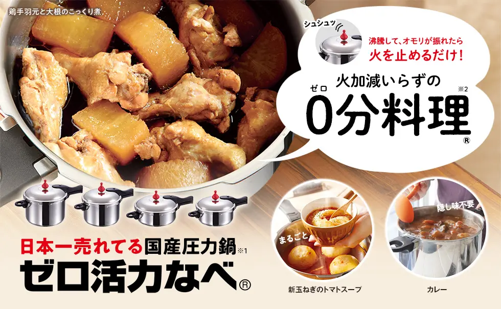

玄米をまとめ買いしている30kgなどで購入し、食べる分だけ精米したい。

Brown rice, better every day
今日のご飯、なんか美味しい。
必要な分だけ家で精米すれば、その「おいしい」を毎日にできる。しかも、もう精米しに出かけなくていい。
玄米生活をもっとおいしく、もっとラクにする道具と工夫。
こんな人におすすめ
コイン精米を使っている精米のためだけに外へ行く手間をなくしたい。
毎日のご飯をもう少しおいしく大きく生活を変えず、日常を一段よくしたい。
3 steps
全部そろえなくていい。
変えるなら、ここから。
最初は精米機。次に保存と黒米。最後に、量る・洗う・炊くまでの流れを整えます。

STEP 01 / HOME MILLING
精米したてを、毎日に。
必要な分だけ精米する。それだけで、ご飯は変わる。
私が一番先に変えるなら、精米機です。高級機であることより、毎回迷わず使えて、必要な量だけ精米できることを重視しています。

実際に所有・毎日使用
山本電気
山本電気
MICHIBA KITCHEN PRODUCT
匠味米 MB-RC52 / MB-RC52W
最安価格 13,800円／実売1万円台半ば （2026年9月5日確認）
推す理由は、操作が簡単、買い替えやすい価格、精米したてがおいしいの順。5合まで精米でき、私は栄養と食べやすさのバランスがよい5分づきを定番にしています。
正直な欠点：音はうるさいです。それでも、毎日の使いやすさと価格を考えると、実用品として十分だと感じています。
製品仕様をメーカー公式で確認 ↗ふるさと納税のリンク先はMB-RC52ではなく現行のYE-RC52-Bです。2026年9月5日確認時は寄付58,000円・在庫あり。掲載状況は変動します。
詳しく見る：コイン精米との比較・機種比較・手入れ・米ぬか
1. 30kgコイン精米との比較
私の実家では20年以上、親戚の農家から玄米を買い、30kgずつコイン精米してきました。100円／10kgなら30kgで300円なので、金額だけ比べればコイン精米は非常に安いです。
| 比較 | 30kgコイン精米 | 自宅精米 |
|---|---|---|
| 費用 | 約300円／30kg | 本体購入＋電気代 |
| 移動 | 必要 | 不要 |
| 精米後 | 3か月以上かけて食べることも | 必要量だけ |
| 分づき | まとめて決定 | その都度選べる |
玄米をまとめ買いし、精米後の米を数か月かけて食べる家庭では、節約よりも「精米したて・移動不要・好きな分づき・必要量だけ」の価値が大きくなります。
2. MB-RC52 vs i-rice
| 比較 | MB-RC52 | i-rice YE-RC25A |
|---|---|---|
| 実売目安 | 約1.4万円〜 | 約3.6万円 |
| 容量 | 5合 | 5合 |
| 魅力 | シンプル・買い替えやすい | デザイン・静音性・新機能 |
| 私の選択 | 実用品としてこちらで十分 | 見た目・静音性重視なら有力 |
価格は2026年9月5日確認の目安。通販価格は変動します。
3. 精米機の洗い方・手入れ
私の場合、ぬか容器と精米かごは毎回洗いません。汚れが気になった時に洗い、本体も気になった時に濡れ布巾などで拭いています。
精米後の米に「胚芽のような細かいもの」が混ざり始めた感覚を、ぬか容器が満杯に近づいたサインにしています。これはメーカー基準ではなく、本人の実使用上の目安です。
4. 米ぬかの処理
小さなゴミ箱へ毎回直接捨てず、大きめの買い物袋にまとめ、ある程度たまったら生ごみと一緒に処分しています。
生の米ぬかを畑へ日常的に大量散布することも、栄養が強すぎることや虫が気になるため私は勧めていません。その先の理想形が、ページ末尾のReencleです。
参考：山本電気 MB-RC52 ／ 価格.com ／ 須賀川市返礼品


STEP 02 / EAT & FREEZE
炊きたてのおいしさを、あとまで。
冷凍と黒米で、毎日のご飯をもう一段。
精米したてを炊いたら、次は保存と食べ方。ここは費用が小さく、取り入れやすい改善です。
詳しく見る：冷凍・150g管理・黒米・容器の使い勝手
1. 冷凍保存
炊いた後すぐに食べない分は、私は冷蔵より冷凍を優先。炊きたてのおいしさを残しやすく、解凍後の食感もよいと感じています。
2. 150g管理
保存前に150gへそろえると「何となく多めに盛る」が減り、食べる量が明確になります。結果としてご飯量を調整しやすくなりました。
3. 黒米
通常は10g／合、たまに20g／合。標準から増減した黒米1gにつき、水も1g増減するのが私の運用です。
4. 容器の使い勝手
毎日使うので、洗いやすさとスタッキング性が重要です。リンク先の使用品は現在販売終了のため、代替品も「1食分・洗いやすい・重ねやすい」を基準に選ぶのがおすすめです。
参考：使用中の冷凍ごはん容器 ／ 多賀城みそらの郷 黒米

STEP 03 / DAILY ROUTINE
量る・洗う・炊くを、もっとラクに。
毎回同じように炊けると、ご飯づくりはもっと気楽になる。
米を取り出すところから炊き上がりまで、小さな面倒と迷いを順番に減らします。
Water calculator
活力鍋 Lスリム用
水量計算機
5分づき・黒米10g／合を標準にした実測テーブルです。6合だけは、5合・7合の実測値からの推定です。
基準水量：2合440g ／ 3合680g ／ 4合768g ／ 5合960g ／ 6合1100g（5合・7合の実測値から推定） ／ 7合1240g。新米ONは基準水量×0.95、その後に標準黒米との差を1g＝水1gで加減。最終値は1g単位に四捨五入します。新米−5%も本人の実測データを基にした目安です。
詳しく見る：米びつ・防虫・洗米・KJ-304・活力鍋

1. 米びつ
MK ライスエース 33kg RC-33W
1合・2合レバーで計量がとてもラクで、重量もかなり安定しています。30kg袋を丸ごと持ち上げず、私は直径約20cmのボウルで数回に分けて移しています。
弱点：最初の補充は少し大変。ただし数か月に一度の作業より、毎日の計量がラクになるメリットの方が大きいと感じます。

2. 防虫
米唐番 10kgタイプ
私の運用：33kg米びつに1個。赤い中身がほぼなくなったら次を追加し、古い方が完全にカラカラになったら捨てています。
メーカー推奨：10kgタイプ1個で米びつ30kgまで。33kg容器に1個という私の使い方は標準範囲をわずかに超えるため、メーカー表示を優先してください。
3. 洗米
小さい米粒を逃がさないザル
最大の良さは、小さい米粒が穴から逃げないこと。水切れは少し遅いので、最初の1〜2回はザルを傾け、水切り部分からぬかの多い水を早めに捨てます。活力鍋へ移す時も水切り口側から流すとスムーズです。
使っているザルを見る ↗
4. 計量
TANITA KJ-304
第一の理由は最大3kgまで量れること。細かい単位にも対応し、黒米と水だけでなくパンやお菓子作りにも使えます。
活力鍋を載せて黒米＋水まで量ったら、鍋をスケールから下ろして洗った米を加えます。米まで載せると合数によって3kgを超える可能性があります。収納場所は取り、私は電子レンジの上に置いています。公式価格5,500円（公式ショップは2026年9月5日確認時に在庫切れ）。

5. 炊飯
ゼロ活力なべ Lスリム ＋ Rinnai Lisse
私の実運用：浸水せず、中央バーナーで加熱。圧力がかかって「カチカチ」と鳴り始めたら火力を1段下げ、5分タイマー。5分経過で消火します。Lisseの焦げつき防止などで先に自動消火した場合はそのまま終了し、再点火しません。圧力表示ピンが完全に下がってから開け、全体を混ぜ、できれば10分ほど蒸らします。
これはメーカー公式レシピではなく、本人の実使用方法です。圧力鍋とコンロの安全装置を無効化せず、製品の最新取扱説明書を必ず優先してください。
参考：MK ライスエース ／ エステー 米唐番 ／ TANITA KJ-304 ／ ゼロ活力なべ製品情報 ／ 最新取扱説明書
Future / その先の発展編
まだ導入していません精米から、堆肥まで。
暮らしをひとつの循環に。
米ぬかまで、暮らしの中で循環させる。
精米で出る米ぬかと日常の生ごみを、捨てるだけで終わらせない。これは使用レビューではなく、次に導入を検討している理想形としてのReencle Primeです。
買うなら、定価で急がずセール時に。
通常価格110,000円
2026年9月5日確認
9月30日まで10%OFF99,000円ここを狙う
9月30日まで10%OFF99,000円ここを狙う
仮に上限3万円の補助が使えれば実質 69,000円制度適用を保証する金額ではありません
築上町の生ごみ処理機購入補助は購入価格の2/3以内・上限30,000円ですが、令和8年度分は予算上限に達し受付終了しています。自治体・年度・予算残額・申請時期で条件は変わるため、購入前にお住まいの自治体の最新情報を確認してください。

参考：Reencle公式（2026年9月5日確認：110,000円 → 99,000円、エコライフ応援セール10%OFF・9月30日まで） ／ 築上町 生ごみ処理機購入補助事業（2026年4月16日更新、令和8年度受付終了）。
Start small
毎日食べるものだから、
小さな改善が効く。
全部を一度にそろえる必要はありません。まず精米機から。それだけでも、玄米を買う暮らしの体験は変わります。
精米したて→黒米＋冷凍→炊飯環境→米ぬかまで循環
まずは精米機を見る